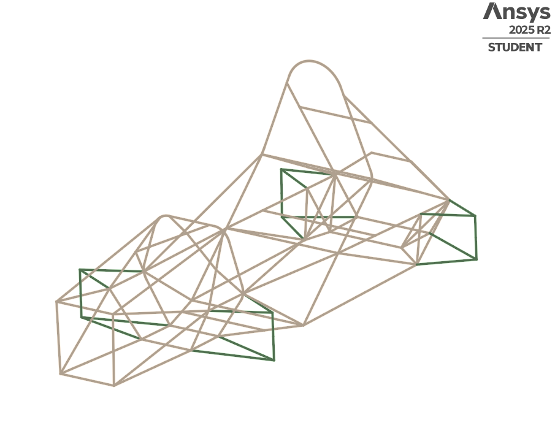
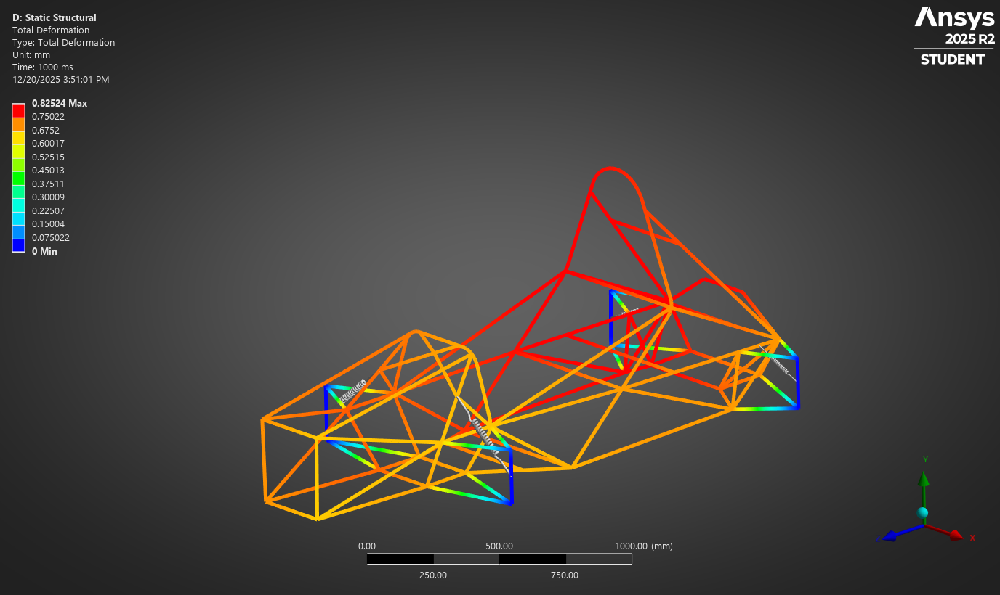
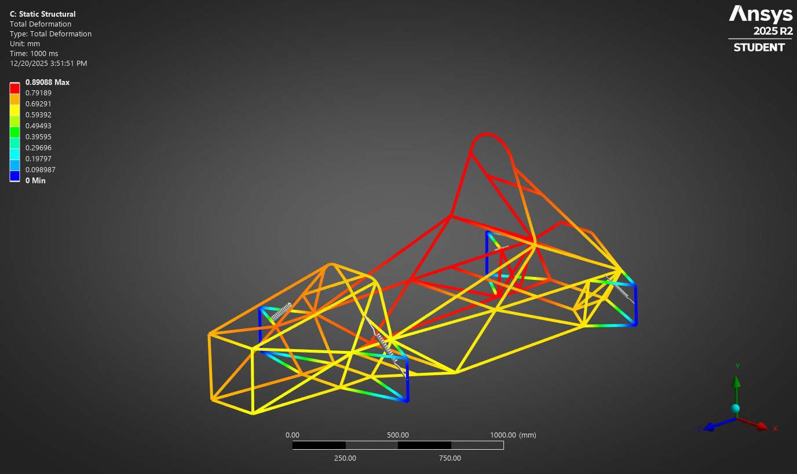
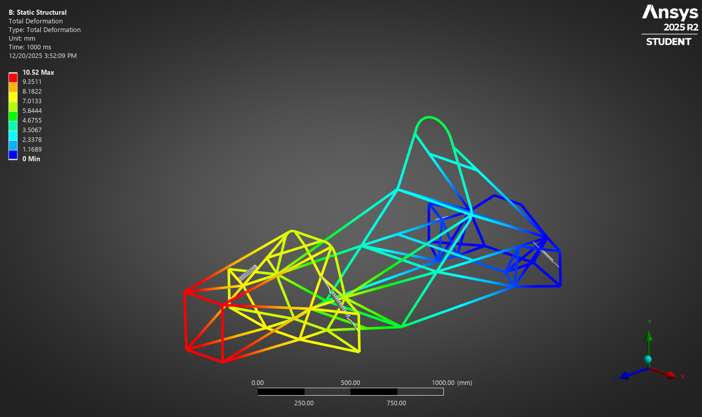
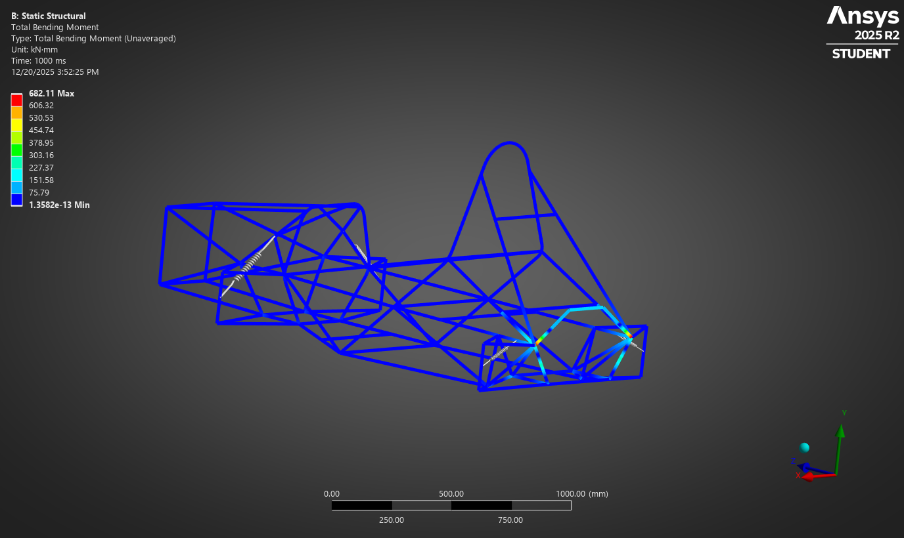

Formula SAE Chassis Structural Analysis
ANSYS Innovation Space — Completed Guided Simulation Course
Project Overview
This project focuses on structural analysis of a Formula SAE tubular spaceframe chassis using ANSYS Mechanical. The objective was to develop correct modeling workflows for motorsport applications, including geometry preparation, load case definition, and interpretation of structural response.
While the baseline chassis geometry was provided as part of an ANSYS instructional course, all geometry cleanup, tube property assignment, boundary conditions, and load applications were completed independently to mirror real-world motorsport analysis practices.
Geometry Preparation
The chassis was imported into ANSYS SpaceClaim as a line-body network representing the tubular steel members. Geometry was cleaned to remove false intersections and redundant connections, and cross-section properties were assigned per tube diameter and wall thickness prior to meshing.

Cleaned chassis line geometry in ANSYS SpaceClaim with tubular cross-sections assigned.Load Cases Analyzed
Four primary structural scenarios were evaluated to represent real competition loading conditions:
- Torsional stiffness — opposing corner loads to evaluate chassis rigidity
- Cornering — lateral g-load distribution across the frame
- Aerodynamic downforce — vertical loads at front and rear attachment points
- Frontal impact — forward deceleration load applied at the front bulkhead
Torsional Stiffness
Opposing vertical forces were applied at the front suspension pickup points while the rear was constrained, loading the chassis in twist. Torsional stiffness evaluation provides a baseline for comparing chassis design iterations and identifying members that contribute most to overall rigidity.
 Total deformation under opposing corner loads — torsional stiffness evaluation.
Total deformation under opposing corner loads — torsional stiffness evaluation.
Cornering
Lateral g-load was distributed across the frame to simulate the chassis response during high-speed cornering. Results were reviewed for asymmetric deformation patterns and identification of members carrying the highest lateral loads.

Total deformation under lateral cornering load — g-load distribution across spaceframe.Aerodynamic Downforce
Vertical downforce loads were applied at the front and rear aerodynamic attachment points to evaluate chassis bending response and load transfer to the suspension pickups under high-speed aerodynamic loading.

Total deformation under aerodynamic downforce loading at front and rear attachment points.Frontal Impact
A forward deceleration load was applied at the front bulkhead while the rear structure was constrained, simulating the chassis response during a frontal collision event. Results highlight load transfer paths through the primary structure and stress concentrations at major frame joints.

Total deformation under frontal impact loading — load transfer through primary spaceframe members.
Bending stress distribution under frontal impact — stress concentrations at major joint intersections.Key Takeaways
The primary value of this project was establishing a repeatable workflow for motorsport structural analysis — from geometry import through load case execution and results interpretation. Torsional stiffness evaluation in particular established useful baselines for comparing chassis design iterations.
Working through the ANSYS guided course also reinforced the importance of boundary condition selection and the sensitivity of beam element models to cross-section property accuracy. These workflows are directly applicable to the Shell Eco-Marathon chassis development work currently underway.